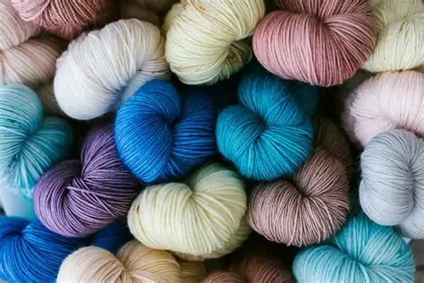
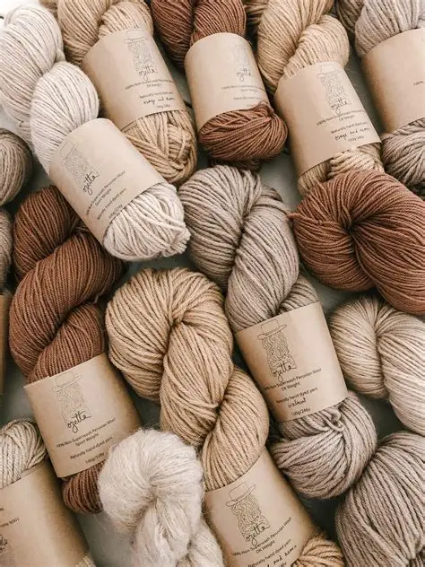

Background

Into Yarn is a Pretoria-based yarn and craft business serving the local knitting and crochet community. Pretoria has an involved craft culture maintained by local industries and experts in yarn trading.
Yarn intends to offer quality and affordable yarn, materials and craft supplies while supporting crafters of all levels of skills through guidance, and patterns.
The vision is to create a welcoming community centre where the community can enjoy creativity, social connection and the healing benefits of knitting and crochet.
Knitters and crocheters, social crafters, and craft admirers. The focus on community and craft activities reflects Pretoria's established local craft culture.